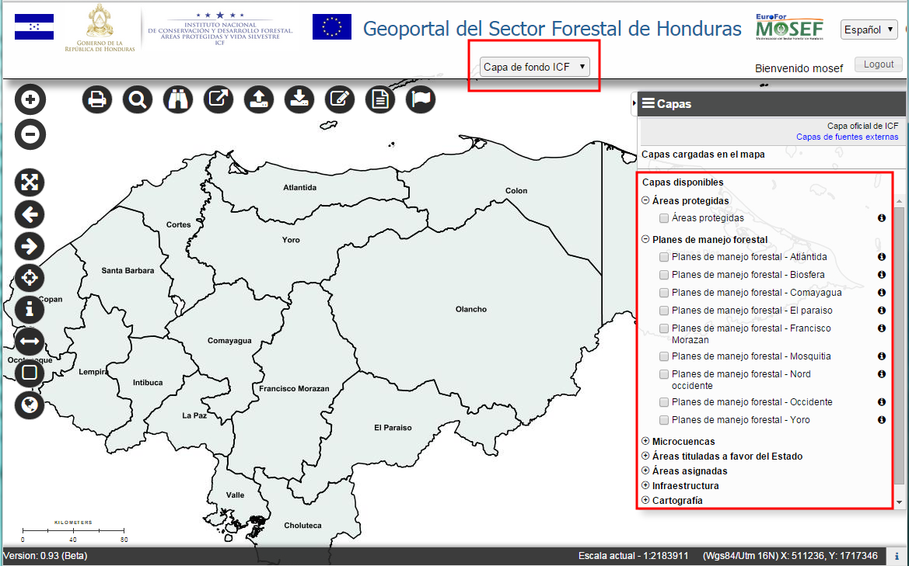
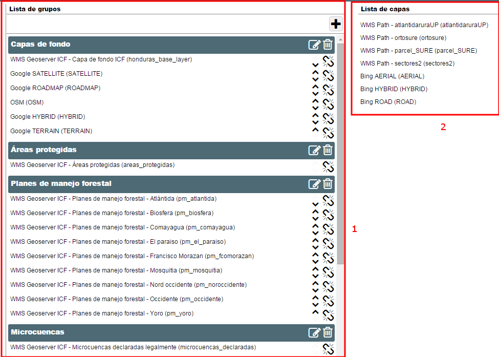
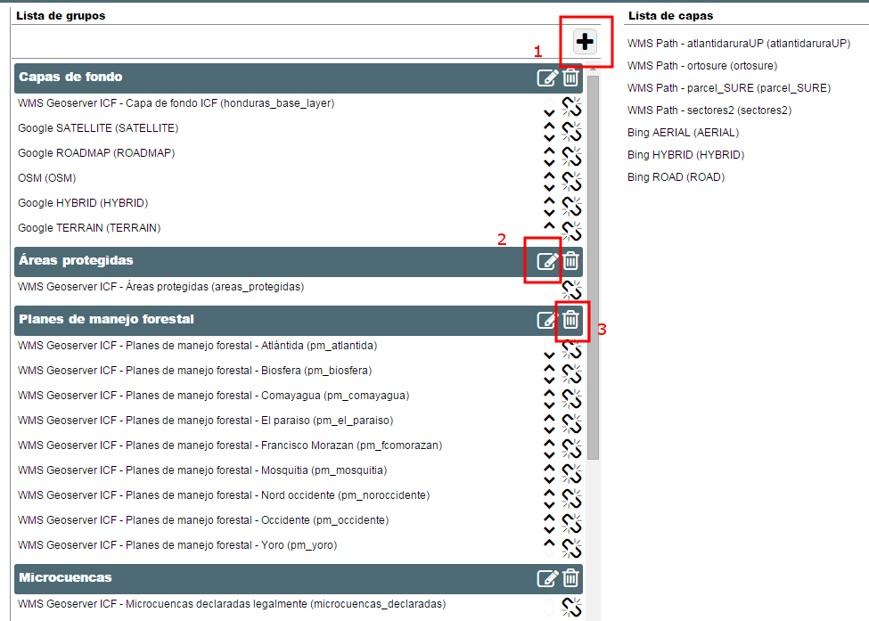
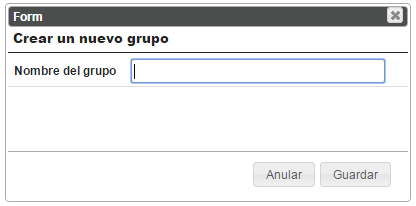
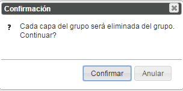
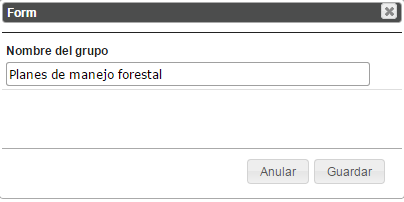
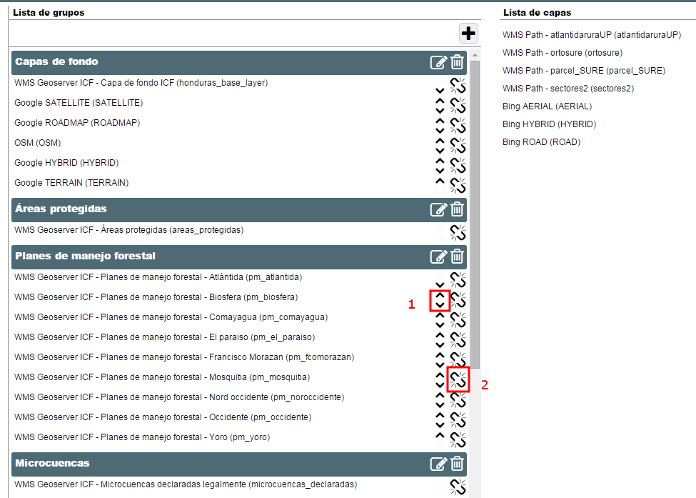

Permite configurar la lista de las capas disponibles mostradas en el WebGIS y las capas de fondo del mapa (ver imagen siguiente).

Capas disponibles y capas de fondo en el Geoportal.
La pagina de configuración del mapa es la siguiente:

Pagina de configuracion del mapa
La ventana està dividida en dos partes: a la derecha hay la lista de capas (Punto 2), donde se encuentran todas las capas que han sido configuradas en la sección de “Configuración de Capas”.
En la parte izquierda de la ventana hay la “Lista de Grupos” (Punto 1), que el usuario puede definir.
Los grupos se pueden crear, modificar, eliminar y también se puede cambiar el orden entre ellos.
El botón Añadir un grupo (Punto 1 de la imagen siguiente) permite de crear un nuevo grupo, insertando un nombre. Un grupo se puede también Modificar (Punto 2) y Eliminar (Punto 3).

Botones para insertar, modificar y eliminar grupos
Permite añadir un grupo:

Ventana para añadir un grupo
Una ventana permite al usuario eliminar un grupo existente.
Si hay capas asociadas al grupo, un mensaje de adventencia pregunta al usuario si quiere proceder.

Mensaje de advertencia para la eliminaciòn
Una ventana permite al usuario modificar un grupo existente y se parece a la de la inserción de un nuevo grupo.

Desde la lista de las capas disponibles (a la derecha) es posible arrastrar una capa y moverla en el grupo deseado.
Además de la posibilidad de cambiar el orden de los grupos (arrastrandolos), también se puede cambiar el orden en el que las capas aparecen dentro de un grupo, usando los botones a la derecha (Punto 1 de la siguiente imagen).
El boton del Punto 2 permite remover una capa desde un grupo.

Asociación de capas a un Grupo
El grupo “Capa de fondo” es un grupo particular, donde se pueden poner las capas de fondo. Para que una capa se pueda poner en este grupo, es necesario que sea impostada en su configuración como “Capa de fondo”.